|
|
HELP FIND THE FOLLOWING LOCATIONS
PAGE 21
MAN IN A
SUITCASE: Web
with Four Spiders (Robert Tronson:
January 1967)
Back projection of West Carriage Drive, Hyde Park, London W2:
After explaining the
situation to McGill in the back of his car, Simon Croft dumps McGill by
the
side of the road.
Idenifired by Geoff Dodd, June 2024
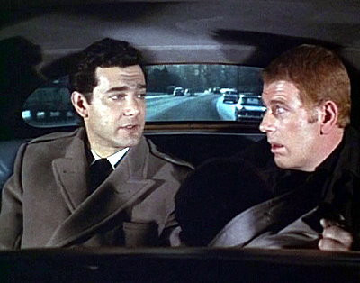
MAN IN A SUITCASE: The Boston Square (Don Chaffey: February 1967)Hydra, Greece: McGill is in Corfu to watch Dalby and Packard


Unknown 1: McGill is in Corfu to watch Dalby and Packard
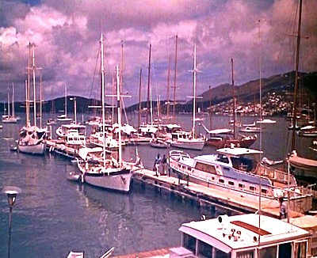
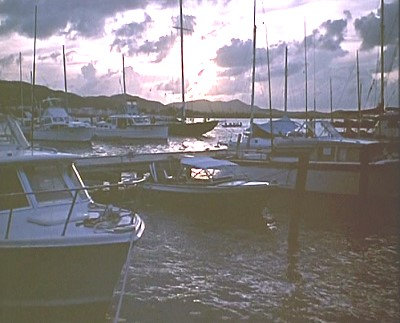
Unknown 2: Dalby and Packard return to Corfu from yet another trip into the Adriatic Sea.
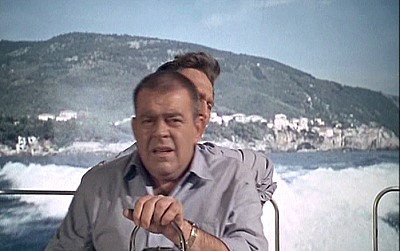
MAN IN A
SUITCASE: Find
the Lady (Robert Tronson:
October 1966)
Unknown 1:
A cat burglar breaks into this Roman apartment block (left). McGill's
hotel in Rome
(right - this may be genuine stock footage of Rome).
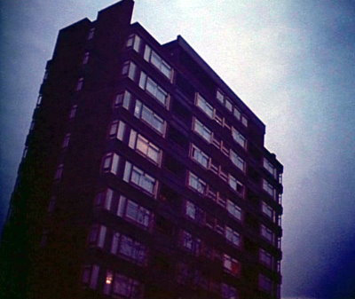
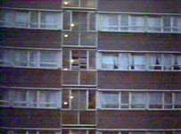
MAN IN A
SUITCASE: Night Flight to Andorra
(Freddie Francis: December 1967)
East
Burnham House, Thompkins Lane, Burnham (destroyed by fire in 1977):
The
villa that McGill and his
band of mercenaries are trying to
rob.
Identified by Geoff Dodd,
July 2021
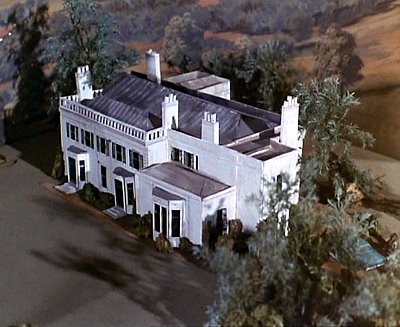
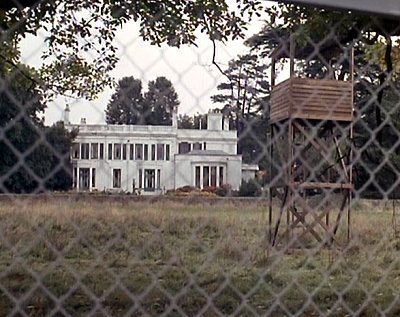
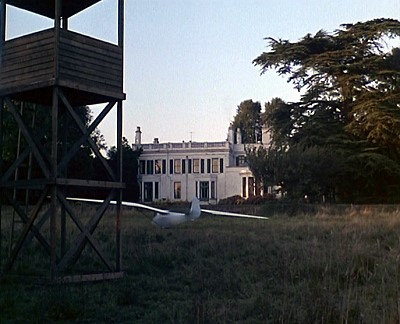
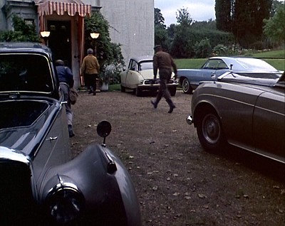
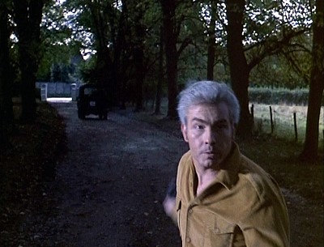
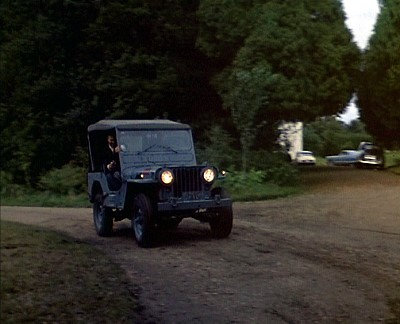
Also seen in FROM A BIRDS EYE VIEW: The Sicilian Affair (John Robbins: Summer 1969)
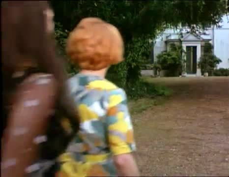
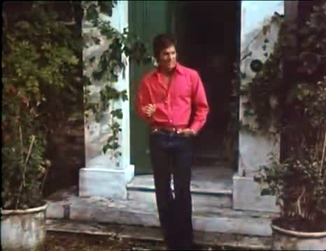
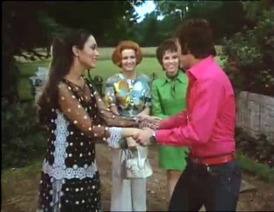
Also seen in THE ZOO GANG: The Counterfeit Trap (John Hough: early 1973)
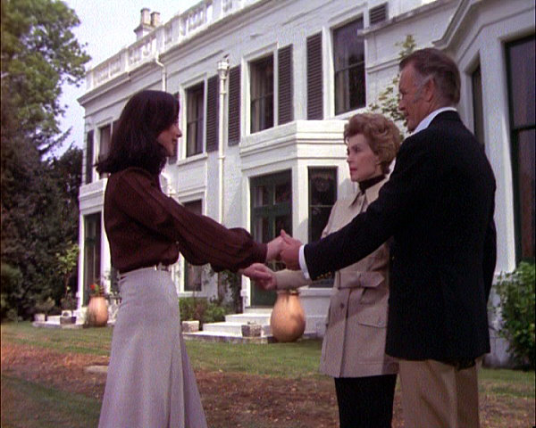
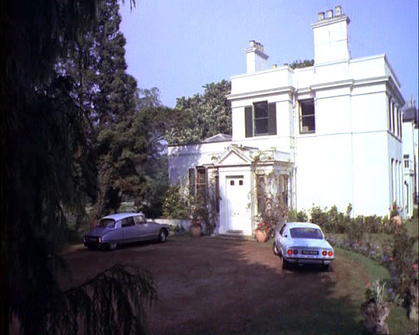
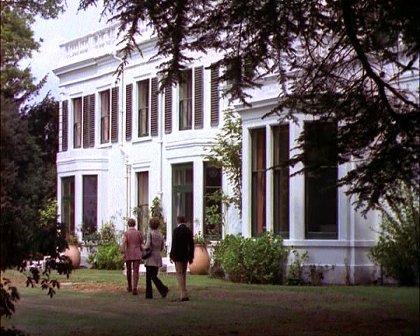
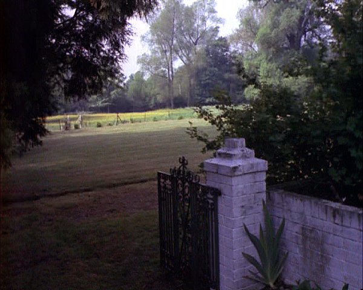
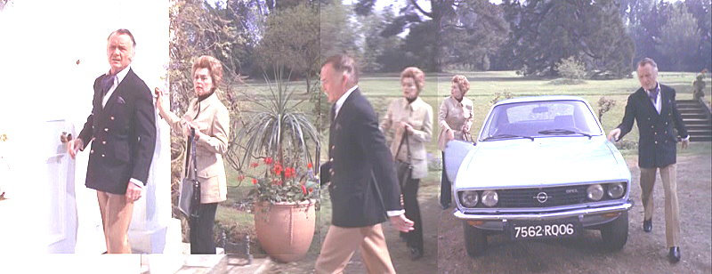
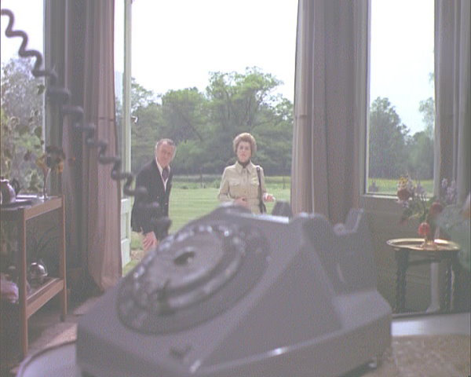
Think you know a spot? Need a bigger image? Email me.
< Previous | Index | Avengerland | Next >
Copyright © 2003 Anthony R. McKay